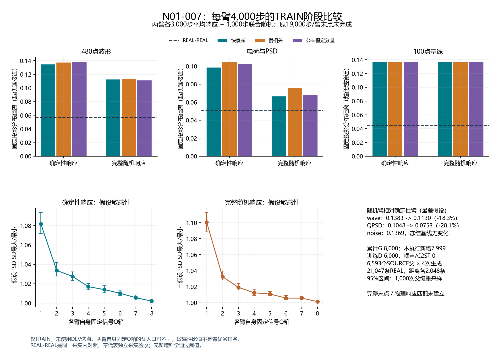
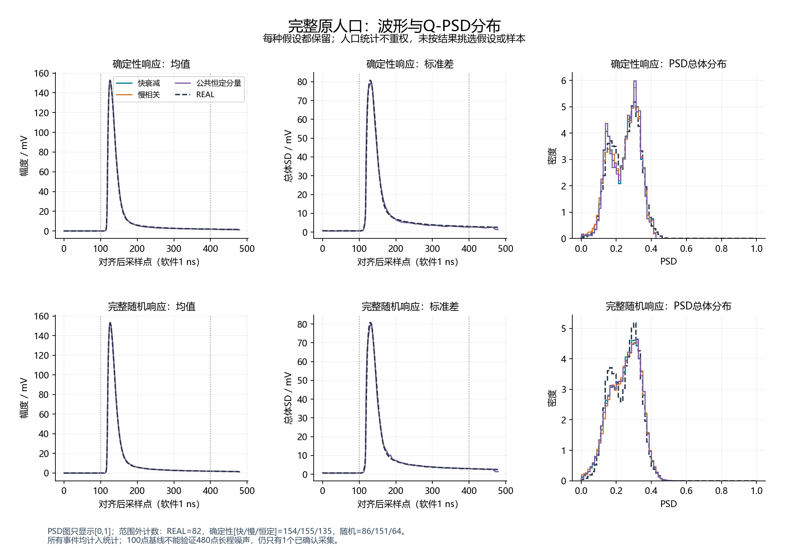
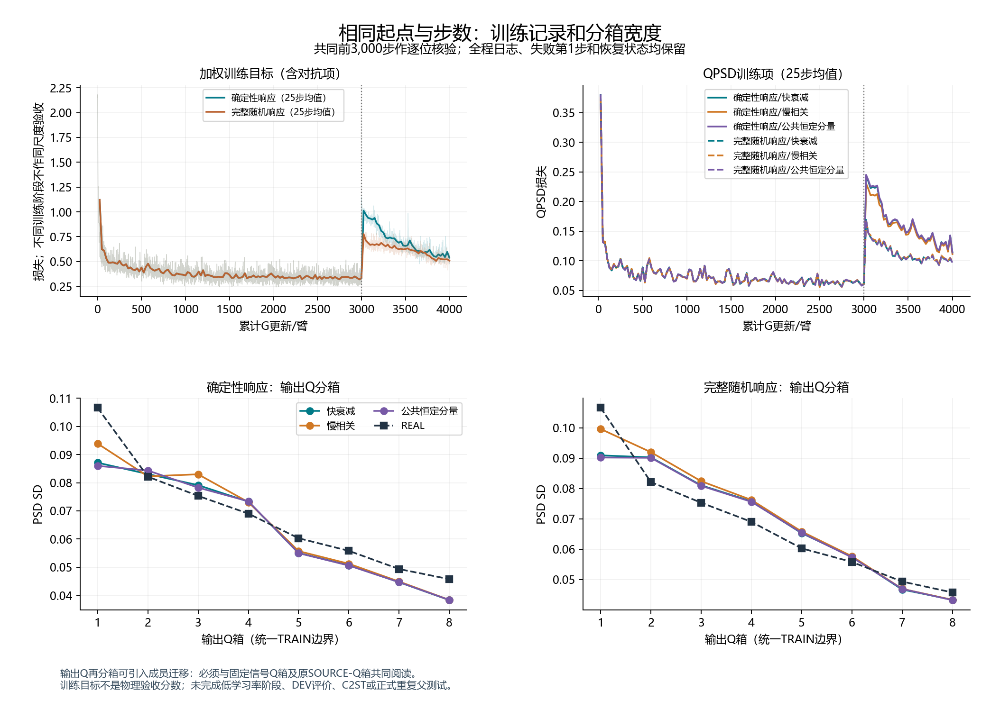

两臂各4,000步，累计8,000 G（本执行新增7,999）与6,000训练D；原每臂19,000步末点尚未完成。科学状态仍为 response_match_not_established。
本轮实际收益：完整随机臂在三种假设下的wave和QPSD距离均低于确定性臂；最差假设距离分别降低18.3%和28.1%。完整随机臂的最差wave/QPSD/noise距离仍约为同采集内REAL-REAL对照的1.99/1.47/3.04倍。基线噪声固定，未在本轮改善。低Q固定信号箱的PSD宽度假设比为1.1006，父级95%区间[1.0893, 1.1128]，不能称长程假设影响已消除。
模型在fast、slow、common_level三种冻结长程噪声假设下训练，逐假设计算损失后等权平均。TRAIN诊断包含6,593个SOURCE父各4次生成和原21,047条REAL；等样本距离使用每侧2,048条及同采集内REAL-REAL对照。没有DEV评价、C2ST或新公开发布。
打开三页PDF图表 · 结构化结果 · 产物核验 · 长静默证据
| 响应 | 噪声假设 | wave | QPSD | noise |
|---|---|---|---|---|
| 确定性响应 | 快衰减 | 0.1345 | 0.09858 | 0.1369 |
| 确定性响应 | 慢相关 | 0.1375 | 0.1048 | 0.1369 |
| 确定性响应 | 公共恒定分量 | 0.1383 | 0.1021 | 0.1369 |
| 完整随机响应 | 快衰减 | 0.1124 | 0.0666 | 0.1369 |
| 完整随机响应 | 慢相关 | 0.113 | 0.07535 | 0.1369 |
| 完整随机响应 | 公共恒定分量 | 0.1113 | 0.06829 | 0.1369 |
| REAL-REAL | 同采集内对照 | 0.05673 | 0.0512 | 0.04501 |
各项不是通用通过分数；REAL-REAL给出本次有限样本对照。两臂自身固定信号Q箱可有不同父人口，不能把敏感性比值更小直接解读为更接近REAL。输出Q箱和原SOURCE-Q箱的完整摘要保存在原科学SUMMARY。



已核对的原记录在20点均值降采样后只有500点，半高上升沿位于120-140点，没有480点脉冲前窗口。100点基线只是处理约定；长程噪声、硬件标定与独立采集验证仍缺少证据。此次元数据核对未解码新波形或DEV。
初次运行在第1个G更新后因状态字段重复退出，该检查点与失败回执完整保留。恢复后未重复该次更新。当前报告由主代理自检，原生复现回执另行列入最终交付；不存在第二方独立审核。低学习率阶段与原完整末点未执行，训练集改善不构成物理响应匹配。